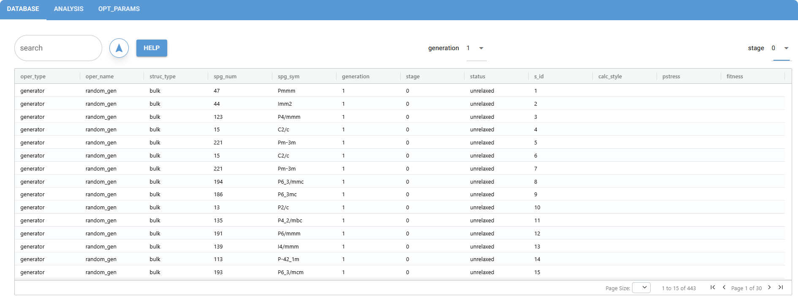
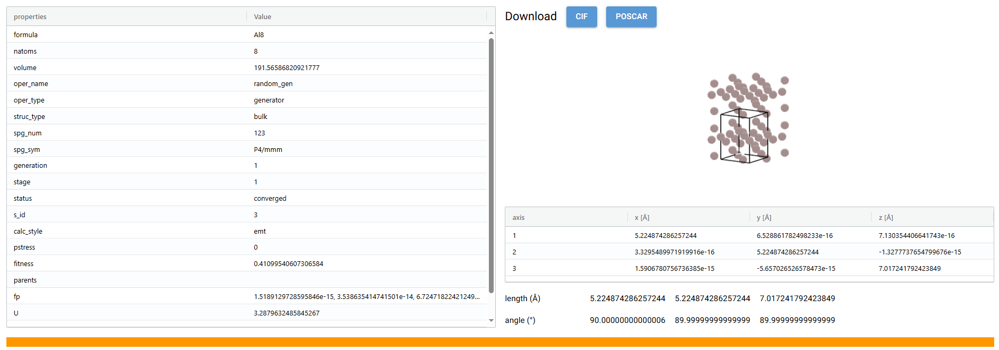

3. Quick start#
This is a quick start guide for structure prediction using AESP, through which you can quickly understand the paradigm cycle that AESP operates in and apply it to your projects.
3.1. Task#
Master the Paradigm Cycle for using AESP and learn how to apply it to using AESP with a complete case study.
By the end of this tutorial, you will be able to:
Preparation of input files for AESP
Familiarity with the structure prediction process of AESP
Work through this tutorial. It will take you 20 minutes, max!
3.2. Background#
In this tutorial, we will take the aluminum metal (Al) as an example to provide a detailed introduction to the training and application of the AESP. Also for demonstration purposes, we use the effective medium theory (EMT) in ASE for structural relaxation. AESP is a software tool that employs adaptive evolutionary algorithm for structure prediction.
3.3. Practice#
3.3.1. Preparing the input file#
The input file is in json format and named std-bulk.json.
{
"dflow_config" : {
"mode" : "debug"
},
"aesp_config" : {
"type" : "std-sp",
"opt_params" : {
"generation" : {
"adaptive" : {}
},
"population" : {
"adaptive" : {}
},
"operator" : {
"type" : "bulk",
"generator" : {
"random_gen_params" : {
"composition" : {"Al": 8}
}
},
"mutation" : {
"strain_mut_params" : {},
"permutation_mut_params" : {},
"ripple_mut_params" : {}
},
"crossover" : {
"plane_cross_params" : {},
"sphere_cross_params" : {},
"cylinder_cross_params" : {}
},
"adaptive" : {},
"hard_constrains" : {
"tol_matrix" : {}
}
},
"cvg_criterion" : {}
},
"calc_stages" : [
{
"type" : "emt",
"inputs_config" : {},
"run_config" : {}
}
],
"step_configs" : {}
}
}
At this point, we type aesp submit std-buld.json in the terminal to submit the task, and you can see the output of the terminal
$ aesp submit std-buld.json
_ _____ ____ ____
/ \ | ____| / ___| | _ \
/ _ \ | _| \___ \ | |_) |
/ ___ \ | |___ ___) | | __/
/_/ \_\ |_____| |____/ |_|
v2025.10.1
*AESP* 2025-05-12 10:10 [INFO]: Input file being checked for correctness
*AESP* 2025-05-12 10:10 [INFO]: The complete input file will be written to input-std-bulk.json
*AESP* 2025-05-12 10:10 [INFO]: The structure prediction is about to start
*AESP* 2025-05-12 10:10 [INFO]: Structure prediction (Standard)
Workflow is running locally (ID: std-sp-szvl6)
However, this submission is not very convenient. For a large task, the computation can take up
to several weeks, so we can submit it to run in the background. Use the nohup command that
comes with linux, which is nohup aesp submit std-bulk.json > calc.log 2>&1 &
$ nohup aesp submit std-bulk.json > calc.log 2>&1 &
[1] 136412
$ ls
calc.log input-std-bulk.json std-bulk.json std-sp-szvl6 upload
At this point, we can check the status of the task by using the status command
, and we can also use the watch command to monitor the status in real time.
$ aesp status std-bulk.json std-sp-szvl6/
...
Mode : std-sp
Workflow : Running
Current step : relax-run--g1-s1-0 Running
$ watch -n 60 aesp status std-bulk.json std-sp-szvl6/
...
Mode : std-sp
Workflow : Succeeded
Current step : scheduler-gen--g10 Succeeded
When Workflow shows Succeeded it means that the workflow has completed
successfully, so the results of the calculation can be further processed with
the analysis command.
$ aesp analysis std-bulk.json std-sp-szvl6/
...
*AESP* 2025-01-24 21:40 [INFO]: Input file being checked for correctness
*AESP* 2025-01-24 21:40 [INFO]: The complete input file will be written to input-std-bulk.json
*AESP* 2025-01-24 21:40 [INFO]: The output results are being analyzed
...
$ ls
calc.log input-std-bulk.json results std-bulk.json std-sp-szvl6 upload
At this point, the folder has an additional results folder, which holds the structures (unrelaxed and relaxed) obtained from the inclusion of the predictions , a summary of the structure predictions (summary), and a plot of the parameter changes (html).
On the other hand, we can also analyze the results in a more convenient way, namely visualization
$ aesp gui
...
NiceGUI ready to go on http://localhost:8080, http://172.17.0.1:8080, http://172.23.26.105:8080, http://192.168.122.1:8080, http://192.168.123.170:8080, http://192.168.193.42:8080, and http://192.168.49.1:8080
NiceGUI is on air at https://asia-south.on-air.io/devices/0u9iuaH0/
The top one is the local link and the bottom one is the global link. Open the link to see a visualization of the page
Tap into each piece of data to also get a visualization and specific information about the structure
